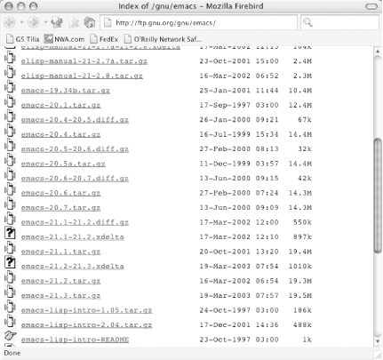
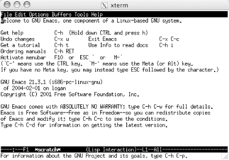

{% include JB/setup %}
{% raw %}
<div>
<div class="calibre24"></div><div class="book" xml:lang="en"><div class="book"><div class="book"><div class="book"><div class="calibre24"></div><h1 class="title"><a id="gnu3-CHP-13" class="calibre1"></a>Chapter 13. Platform-Specific Considerations</h1></div></div></div><p class="copyright">In this chapter, we describe <a id="gnu3-CHP-13-ITERM-2919" class="calibre2"></a>installing Emacs on Unix, Mac OS
X, and Windows as well as some of the subtleties of running Emacs on
the latter two platforms.</p><p class="copyright">Emacs 21 runs on free Unix systems including Linux and BSD variants
as well as on commercial Unix versions such as AIX, Solaris,
SunOS,` and Ultrix. It runs on Mac OS X (currently a
separate fork, but due to be folded into the main distribution
starting with 21.4). It runs on Windows and even on MS-DOS. You can
still get ports for Mac OS 8/9 and Amiga (to name only a few). Emacs
is truly a multiplatform editor.</p><p class="copyright">We cover installing Emacs on Unix, Mac OS X, and Windows. For Windows
and Mac OS X, prebuilt binaries are available. You may want to build
Emacs from source in order to obtain the latest version. However, we
have found up-to-date binaries online for Windows and Mac OS X; you
just have to scout around on the Net to find them. By the time you
read this, the sources for the binaries that we cite may be out of
date. Check out this book's web site for updated
links in that case (<a class="calibre2" href="http://www.oreilly.com/catalog/gnu3">http://www.oreilly.com/catalog/gnu3</a>).</p><p class="copyright">A related issue is where to get Emacs. The Free Software Foundation
(FSF) is the official source for Emacs, but like most
<a id="gnu3-CHP-13-ITERM-2920" class="calibre2"></a>software organizations, official releases
are few and far between. Often, building Emacs from CVS sources is
the best way to get a leading-edge version. Only you can decide
whether you would rather have the latest features—along with
some bugs—or download the tried-and-true version from the
FSF's site.</p><div class="book" xml:lang="en"><div class="book"><div class="book"><div class="book"><h1 class="title"><a id="gnu3-CHP-13-SECT-1" class="calibre1"></a>Emacs and Unix</h1></div></div></div><p class="copyright">Emacs was originally built
<a id="gnu3-CHP-13-ITERM-2921" class="calibre2"></a>
            <a id="gnu3-CHP-13-ITERM-2922" class="calibre2"></a>on a Unix system and continues to run
on the multitude of Unix variants out there. We're
going to download the latest source and show you how to build Emacs
from scratch. It's not really that hard and it has
the salutary effect of keeping you up-to-date with future releases.</p><div class="book" xml:lang="en"><div class="book"><div class="book"><div class="book"><h2 class="title1"><a id="gnu3-CHP-13-SECT-1.1" class="calibre1"></a>Where to Get Emacs?</h2></div></div></div><p class="copyright">If you can't wait, the primary source
<a id="gnu3-CHP-13-ITERM-2923" class="calibre2"></a>
               <a id="gnu3-CHP-13-ITERM-2924" class="calibre2"></a>for
downloading Emacs is <a class="calibre2" href="http://ftp.gnu.org/pub/gnu/emacs/">http://ftp.gnu.org/pub/gnu/emacs/</a>.
Alternatively, you can use CVS to nab the absolute latest build. But
more on that in a minute.</p><div class="book" xml:lang="en"><div class="book"><div class="book"><div class="book"><h3 class="title4"><a id="gnu3-CHP-13-SECT-1.1.1" class="calibre1"></a>Downloading Emacs from the Web</h3></div></div></div><p class="copyright">You can get Emacs from any one
<a id="gnu3-CHP-13-ITERM-2925" class="calibre2"></a>
                  <a id="gnu3-CHP-13-ITERM-2926" class="calibre2"></a>
                  <a id="gnu3-CHP-13-ITERM-2927" class="calibre2"></a>of many
sites—as long as your Internet connection is fast enough to
transfer a 20 MB file easily. You must also have at least 120 MB of
disk space free; this number will certainly grow in future Emacs
releases.</p><p class="copyright">The Free Software Foundation maintains a definitive list of all
mirror sites. The FSF is the principal sponsor of the GNU Project and
it is housed at their site. If you want to look around a bit,
<a class="calibre2" href="http://www.gnu.org/">http://www.gnu.org/</a> is the place
to start. Or as mentioned earlier, you can just jump directly to the
directly listing for Emacs at <a class="calibre2" href="http://ftp.gnu.org/pub/gnu/emacs/">http://ftp.gnu.org/pub/gnu/emacs/</a>. You should
see a list similar to <a class="calibre2" href="ch13.html#gnu3-CHP-13-FIG-1" title="Figure 13-1. The emacs directory at gnu.org">Figure 13-1</a>.</p><div class="figure"><a id="gnu3-CHP-13-FIG-1" class="calibre2"></a><div class="figure-contents"><div class="mediaobject"><a id="I_13_tt662" class="calibre2"></a></div></div><p class="title3"><b class="calibre25">Figure 13-1. The emacs directory at gnu.org</b></p></div><br class="book"/><p class="copyright">Look for the latest version of Emacs (21.3 in <a class="calibre2" href="ch13.html#gnu3-CHP-13-FIG-1" title="Figure 13-1. The emacs directory at gnu.org">Figure 13-1</a>) and download it.</p></div></div><div class="book" xml:lang="en"><div class="book"><div class="book"><div class="book"><h2 class="title1"><a id="gnu3-CHP-13-SECT-1.2" class="calibre1"></a>Where to Put Emacs?</h2></div></div></div><p class="copyright">Regardless of where you go to get
<a id="gnu3-CHP-13-ITERM-2928" class="calibre2"></a>
               <a id="gnu3-CHP-13-ITERM-2929" class="calibre2"></a>the
source, where you put the files you download is really up to you. For
our Unix-based systems, we downloaded everything into
<span><em class="calibre7">/usr/local/install</em></span>. This is a fine place to
start, but if you have a favorite download/development area, feel
free to use that. In fact, you can even put everything in your home
directory while you're building things.</p><p class="copyright">The only thing to remember is that the build process involves a lot
of files that you won't need after
everything's done. Make sure you put things
somewhere that's easy to clean up when all is said
and done.</p><p class="copyright">As for the final destination of the executable,
that's also up to you. Most Unix systems (including
Mac OS X) will do well to use the <span><em class="calibre7">/usr/local</em></span>
hierarchy. That directory is both common and the default choice in
the build scripts. If you're not on a machine that
you have complete control over, though, you can certainly install
Emacs into your home directory (or a subdirectory you keep for you
own software).</p><p class="copyright">One quick note on using your home directory for the executable
version of Emacs: it does make it easy to back up Emacs or transfer
it to another machine if you upgrade your system (we know from
experience!). However, it can limit who has access to Emacs. If
another user works on the same machine and you both want to use
Emacs, installing to a common directory (like
<span><em class="calibre7">/usr/local</em></span> ) is definitely the way to go.</p></div><div class="book" xml:lang="en"><div class="book"><div class="book"><div class="book"><h2 class="title1"><a id="gnu3-CHP-13-SECT-1.3" class="calibre1"></a>Uncompressing and Unpacking</h2></div></div></div><p class="copyright">Now that you have the file, you need
<a id="gnu3-CHP-13-ITERM-2930" class="calibre2"></a>
               <a id="gnu3-CHP-13-ITERM-2931" class="calibre2"></a>
               <a id="gnu3-CHP-13-ITERM-2932" class="calibre2"></a>
               <a id="gnu3-CHP-13-ITERM-2933" class="calibre2"></a>to
do two things to it before you can actually build Emacs: uncompress
and unpack. You can use the <span><strong class="calibre5">tar</strong></span>
command to do both. Make sure you are in the directory where you
downloaded the Emacs file. Type the following command (changing the
<em class="calibre7"><code class="calibre21">n</code></em> to the version number that matches the
file you downloaded), and you will see a list of files.</p><a id="I_13_tt663" class="calibre2"></a><pre class="programlisting">$ <span><strong class="calibre5">tar xvzf emacs-21</strong></span>.<em class="calibre7"><code class="calibre32">n</code></em>
               <span><strong class="calibre5">.tar.gz</strong></span>
x emacs-21.3, 0 bytes, 0 tape blocks
x emacs-21.3/AUTHORS, 77854 bytes, 153 tape blocks
x emacs-21.3/FTP, 8950 bytes, 18 tape blocks
x emacs-21.3/INSTALL, 42841 bytes, 84 tape blocks
x emacs-21.3/README, 4046 bytes, 8 tape blocks
x emacs-21.3/BUGS, 1042 bytes, 3 tape blocks
x emacs-21.3/move-if-change, 129 bytes, 1 tape blocks
x emacs-21.3/ChangeLog, 161418 bytes, 316 tape blocks
x emacs-21.3/Makefile.in, 25461 bytes, 50 tape blocks
. . .</pre><p class="copyright">This list of created files goes on for quite a while—over 2500
files for Emacs 21.3. If you don't want to see the
list, omit the <span><strong class="calibre5">v</strong></span> (<span><strong class="calibre5">verbose</strong></span> option) from the <span><strong class="calibre5">tar</strong></span> command. When this command completes, you
have all of the files for Emacs.</p><p class="copyright">Now that any necessary preparations are out of the way, you can go
through the steps to build and install Emacs itself.</p></div><div class="book" xml:lang="en"><div class="book"><div class="book"><div class="book"><h2 class="title1"><a id="gnu3-CHP-13-SECT-1.4" class="calibre1"></a>Downloading Emacs from CVS</h2></div></div></div><p class="copyright">As we mentioned earlier,
<a id="gnu3-CHP-13-ITERM-2934" class="calibre2"></a>
               <a id="gnu3-CHP-13-ITERM-2935" class="calibre2"></a>
               <a id="gnu3-CHP-13-ITERM-2936" class="calibre2"></a>you can also use
<span><strong class="calibre5">CVS</strong></span> to pull the source files. The
big advantage with CVS is that you get the absolute latest version.</p><div class="book"><ol class="orderedlist"><li class="listitem"><p class="copyright">Create or switch to a directory where your Emacs build can remain.
Don't do this in a temporary directory unless you
don't plan on keeping Emacs around. Once there, set
up the <span><strong class="calibre5">CVS_RSH</strong></span> environment variable:</p><a id="I_13_tt664" class="calibre2"></a><pre class="programlisting">% <strong class="calibre5"><code class="calibre32">setenv CVS_RSH ssh</code></strong></pre></li><li class="listitem"><p class="copyright">If the <span><strong class="calibre5">setenv</strong></span> command is not
recognized, you're probably running <span><strong class="calibre5">bash</strong></span> instead of a <span><strong class="calibre5">csh</strong></span>-derived shell. In that case, use the
following command for the environment variable.</p><a id="I_13_tt665" class="calibre2"></a><pre class="programlisting">$ <strong class="calibre5"><code class="calibre32">export CVS_RSH="ssh"</code></strong></pre></li><li class="listitem"><p class="copyright">Use the <span><strong class="calibre5">cvs</strong></span> command to grab the
source code.</p><a id="I_13_tt666" class="calibre2"></a><pre class="programlisting">% <strong class="calibre5"><code class="calibre32">cvs -z3 -d:ext:anoncvs@savannah.gnu.org:/cvsroot/emacs co emacs</code></strong>
The authenticity of host 'savannah.gnu.org (199.232.41.3)' can't be established.
RSA key fingerprint is 80:5a:b0:0c:ec:93:66:29:49:7e:04:2b:fd:ba:2c:d5.
Are you sure you want to continue connecting (yes/no)?</pre></li><li class="listitem"><p class="copyright">Verify that the public key matches this key:</p><a id="I_13_tt667" class="calibre2"></a><pre class="programlisting">80:5a:b0:0c:ec:93:66:29:49:7e:04:2b:fd:ba:2c:d5</pre></li><li class="listitem"><p class="copyright">That just makes sure you actually got connected to the right system
and aren't being fed some malicious alternative.</p></li><li class="listitem"><p class="copyright">If the keys match, type <span><strong class="calibre5">yes</strong></span> and
press <span><strong class="calibre5">Enter</strong></span>.</p><a id="I_13_tt668" class="calibre2"></a><pre class="programlisting">Warning: Permanently added 'savannah.gnu.org,199.232.41.3' 
(RSA) to the list of known hosts.
cvs server: Updating emacs
U emacs/.cvsignore
U emacs/AUTHORS
U emacs/BUGS
U emacs/COPYING
U emacs/ChangeLog
U emacs/FTP
U emacs/INSTALL
...</pre></li></ol></div><p class="copyright">You'll see thousands of filenames flying by. If you
have a slow network connection, this process could take a while. Hang
in there, though—you're on your way to
building the absolute latest version of Emacs!</p></div><div class="book" xml:lang="en"><div class="book"><div class="book"><div class="book"><h2 class="title1"><a id="gnu3-CHP-13-SECT-1.5" class="calibre1"></a>Building Emacs</h2></div></div></div><p class="copyright">Unless you get a <a id="gnu3-CHP-13-ITERM-2937" class="calibre2"></a>
               <a id="gnu3-CHP-13-ITERM-2938" class="calibre2"></a>prebuilt
version of Emacs that is right for your system, you will need to
build and install the many executable components of Emacs from source
code before you can use it. At this point, it
doesn't matter how you got the source code (HTTP or
CVS), you just need to compile it! Here is some information to get
you started on this task.</p><p class="copyright">Your source code has a top-level directory with a name like
<span><em class="calibre7">emacs-21.3</em></span>. In this directory, you will find
files called <span><em class="calibre7">INSTALL</em></span> and
<span><em class="calibre7">README</em></span>. Examine <span><em class="calibre7">README</em></span>
first; it contains useful general information as well as last-minute
release notes that may be important for you to read before
proceeding. Then read <span><em class="calibre7">INSTALL</em></span>, which gives
step-by-step instructions for building Emacs. Even if you
aren't a Unix expert, you should be able to follow
these instructions. (For convenience, we provide a procedure you can
follow later in this section.)</p><p class="copyright">The FSF's standard installation procedure gets more
comprehensive and bulletproof all the time. Still, the actual ease of
building Emacs depends primarily on what combination of hardware and
software you have. The FSF's installation script
includes a program called <span><strong class="calibre5">configure</strong></span>
that examines your system, figures out what hardware and software you
are running, and configures Emacs accordingly.</p><p class="copyright">
               <span><strong class="calibre5">configure</strong></span> is likely to guess
correctly if you have a popular combination (such as a Sun SPARC CPU
and a recent release of Solaris). If this is true, you should be able
to build Emacs without lots of tweaking or technical expertise.
However, if you have an unusual setup—a wildly obsolete
computer or operating system version, an unusual hardware/software
combination, or unconventional system configuration—then you
will have no choice but to tweak the software.
That's beyond the scope of this book, but those
<span><em class="calibre7">README</em></span> and <span><em class="calibre7">INSTALL</em></span> files
that come with the source distribution are a great place to start
when dealing with uncommon setups.</p><p class="copyright">Here's a procedure for building Emacs that you can
use as a guide:</p><div class="book"><ol class="orderedlist"><li class="listitem"><p class="copyright">Change to the directory where you uncompressed and unpacked Emacs.
For example, if you placed it in the
<span><em class="calibre7">/usr/local/install</em></span> directory:</p><a id="I_13_tt669" class="calibre2"></a><pre class="programlisting">$ <strong class="calibre5"><code class="calibre32">cd /usr/local/install/emacs-21.3</code></strong></pre></li><li class="listitem"><p class="copyright">Run the configure utility.<sup class="calibre6">[<a id="gnu3-CHP-13-FNOTE-1" href="#ftn.gnu3-CHP-13-FNOTE-1" class="calibre2">1</a>]</sup> You should see quite
a bit of output that shows what parts of the system the build script
is looking for.</p><a id="I_13_tt670" class="calibre2"></a><pre class="programlisting">$ <strong class="calibre5"><code class="calibre32">./configure</code></strong>
creating cache ./config.cache
checking host system type... sparc-sun-solaris2.9
checking for gcc... gcc
checking whether the C compiler (gcc  ) works... yes
checking whether the C compiler (gcc  ) is a cross-compiler... no
checking whether we are using GNU C... yes
checking whether gcc accepts -g... yes
checking whether ln -s works... yes
checking how to run the C preprocessor... gcc -E</pre></li><li class="listitem"><p class="copyright">If <span><strong class="calibre5">configure</strong></span> is successful, you
should see a handy summary message similar to the following:</p><a id="I_13_tt671" class="calibre2"></a><pre class="programlisting">Configured for `sparc-sun-solaris2.9'.

  Where should the build process find the source code? /usr/local/install/emacs-21.3
  What operating system and machine description files should Emacs use?
        `s/sol2-5.h' and `m/sparc.h'
  What compiler should emacs be built with?               gcc -g -O2
  Should Emacs use the GNU version of malloc?             yes
  Should Emacs use a relocating allocator for buffers?    yes
  Should Emacs use mmap(2) for buffer allocation?         no
  What window system should Emacs use?                    x11
  What toolkit should Emacs use?                          LUCID
  Where do we find X Windows header files?                Standard dirs
  Where do we find X Windows libraries?                   Standard dirs
  Does Emacs use -lXaw3d?                                 no
  Does Emacs use -lXpm?                                   yes
  Does Emacs use -ljpeg?                                  no
  Does Emacs use -ltiff?                                  no
  Does Emacs use -lungif?                                 no
  Does Emacs use -lpng?                                   no
  Does Emacs use X toolkit scroll bars?                   no</pre><p class="copyright">If the configuration process fails for any reason,
you'll want to go back and consult the
<span><em class="calibre7">INSTALL</em></span> document. It has several tips and tricks
for particular systems and situations.</p></li><li class="listitem"><p class="copyright">If everything is properly configured, you can go ahead and compile
Emacs with the <span><strong class="calibre5">make</strong></span> utility. This
may take a while, so start it before you head out for lunch.</p><a id="I_13_tt672" class="calibre2"></a><pre class="programlisting">$ <strong class="calibre5"><code class="calibre32">make</code></strong>
if [ ! -f /usr/local/install/emacs-21.3/lisp/abbrev.elc ]; then \
  make  bootstrap; \
fi
cd lib-src; make all  \
  CC='gcc' CFLAGS='-g -O2' CPPFLAGS='' \
  LDFLAGS='' MAKE='make'
gcc -DHAVE_CONFIG_H -I. -I../src -I/usr/local/install/emacs-21.3/lib-src 
-I/usr/local/install/emacs-21.3/lib-src/../src   -g -O2 -o test-distrib 
/usr/local/install/emacs-21.3/lib-src/test-distrib.c
./test-distrib /usr/local/install/emacs-21.3/lib-src/testfile
gcc -DHAVE_CONFIG_H -I. -I../src -I/usr/local/install/emacs-21.3/lib-src 
-I/usr/local/install/emacs-21.3/lib-src/../src   -g -O2 /usr/local/install/
emacs-21.3/lib-src/make-docfile.c -lsocket -lnsl -lkstat -o make-docfile
...</pre></li><li class="listitem"><p class="copyright">When that completes, the <span><em class="calibre7">INSTALL</em></span> document
recommends testing your newly built Emacs with the following command:</p><a id="I_13_tt673" class="calibre2"></a><pre class="programlisting">$ <strong class="calibre5"><code class="calibre32">src/emacs -q</code></strong></pre><p class="copyright">Emacs should run and you should get an introduction screen similar to
<a class="calibre2" href="ch13.html#gnu3-CHP-13-FIG-2" title="Figure 13-2. Emacs test after building on a Linux system">Figure 13-2</a>.</p><div class="figure"><a id="gnu3-CHP-13-FIG-2" class="calibre2"></a><div class="figure-contents"><div class="mediaobject"><a id="I_13_tt674" class="calibre2"></a></div></div><p class="title3"><b class="calibre25">Figure 13-2. Emacs test after building on a Linux system</b></p></div><br class="book"/></li><li class="listitem"><p class="copyright">If you see the Emacs splash screen,<sup class="calibre6">[<a id="gnu3-CHP-13-FNOTE-2" href="#ftn.gnu3-CHP-13-FNOTE-2" class="calibre2">2</a>]</sup>
you're in good shape, so go ahead and install it:</p><a id="I_13_tt675" class="calibre2"></a><pre class="programlisting">$ <strong class="calibre5"><code class="calibre32">sudo make install</code></strong></pre><p class="copyright">or, if you <span><em class="calibre7">su</em></span>'d to root
earlier, simply:</p><a id="I_13_tt676" class="calibre2"></a><pre class="programlisting">$ <strong class="calibre5"><code class="calibre32">make install</code></strong></pre><p class="copyright">You'll be prompted for your password. After the
install completes, you should be all set to use Emacs.
Congratulations!</p></li></ol></div></div></div><div class="book"><br class="book"/><hr class="calibre4"/><div class="book"><p class="copyright"><sup class="calibre6">[<a id="ftn.gnu3-CHP-13-FNOTE-1" href="#gnu3-CHP-13-FNOTE-1" class="calibre2">1</a>] </sup>Depending on your system
and its permissions, you may have to switch to the root user using
<span><strong class="calibre5">su</strong></span> to install Emacs. In that case,
you won't need to preface the final <span><strong class="calibre5">make</strong></span> command with <span><strong class="calibre5">sudo</strong></span>.</p></div><div class="book"><p class="copyright"><sup class="calibre6">[<a id="ftn.gnu3-CHP-13-FNOTE-2" href="#gnu3-CHP-13-FNOTE-2" class="calibre2">2</a>] </sup>One of the
authors was not able to see the splash screen, but the install worked
fine nonetheless. We say forge ahead even if you
don't see it.</p></div></div></div></div>

{% endraw %}

